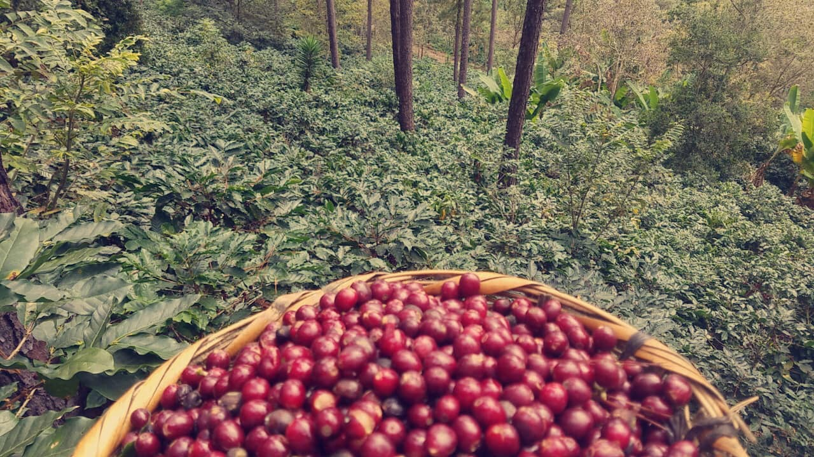

Quienes somos
Nuestra Historia
Herencia Café nace como un proyecto familiar con raíces profundas en generaciones pasadas. Desde hace muchos años, nuestros ancestros se dedicaban al cultivo del café en pequeñas parcelas ubicadas en las cercanías de la Reserva Biológica Güisayote, transmitiendo sus conocimientos y amor por la caficultura de generación en generación.
Estas tierras fueron heredadas a sus descendientes, quienes con esfuerzo, dedicación y trabajo en familia han mantenido viva la tradición cafetalera. A lo largo del tiempo, este legado ha crecido gracias al compromiso de cada miembro de la familia, cuidando cada etapa del proceso productivo.
Hoy, Herencia Café representa el resultado de ese trabajo conjunto, con el objetivo de llevar hasta su hogar un café de alta calidad, elaborado con respeto por la tierra, la tradición y el esfuerzo familiar que nos define.

Misión
Producir y ofrecer café de origen familiar de alta calidad, preservando la tradición cafetalera hondureña y brindando a nuestros clientes un producto auténtico, cultivado con dedicación y respeto por la tierra.
Visión
Ser una marca reconocida a nivel nacional por la calidad de nuestro café, manteniendo nuestros valores familiares y contribuyendo al desarrollo sostenible de la caficultura en Honduras.
Valores
- Tradición familiar
- Calidad en cada grano
- Compromiso con el trabajo artesanal
- Respeto por el medio ambiente
- Responsabilidad y honestidad